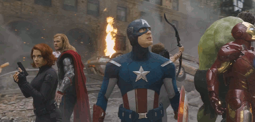
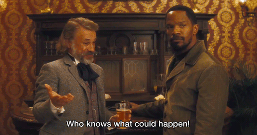
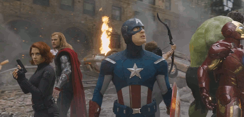
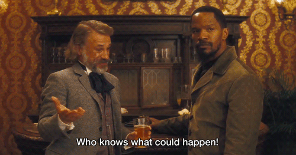
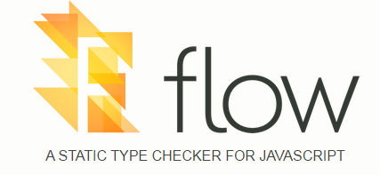
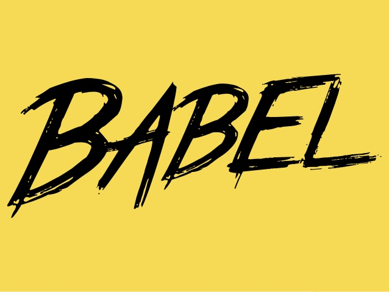
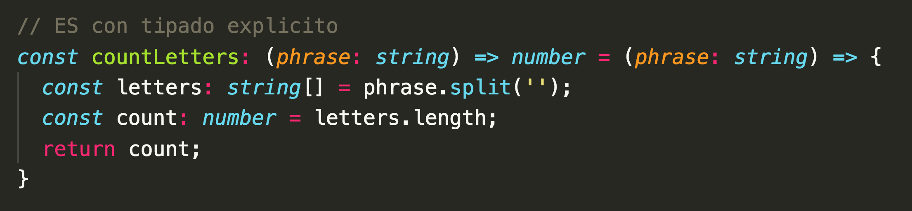
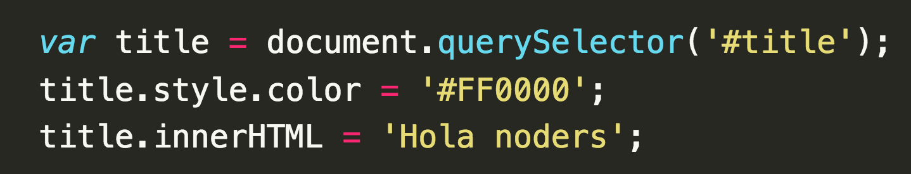

Typescript en el mundo real
Rafael Poveda
@raerpo

- Frontend developer en Adessa Falabella*
- 5 años de experiencia frontend en e-commerce
- Javascript ❤️
- Colombiano 🇨🇴
Typescript es un superset con tipado de JavaScript que compila a JavaScript.
 Fuente imagen
Fuente imagen
 




Anders Hejlsberg
Autor de Turbo pascal, Delphi, C# y TypeScript.
Propositos
Agregar tipado estático a JS
Usar caracteristicas del JS futuro, ahora.
Demo
Tipado implicito y explicito
Demo
tsconfig.json
Demo
TypeScript y el DOM.
Demo
Node / Hapi.js